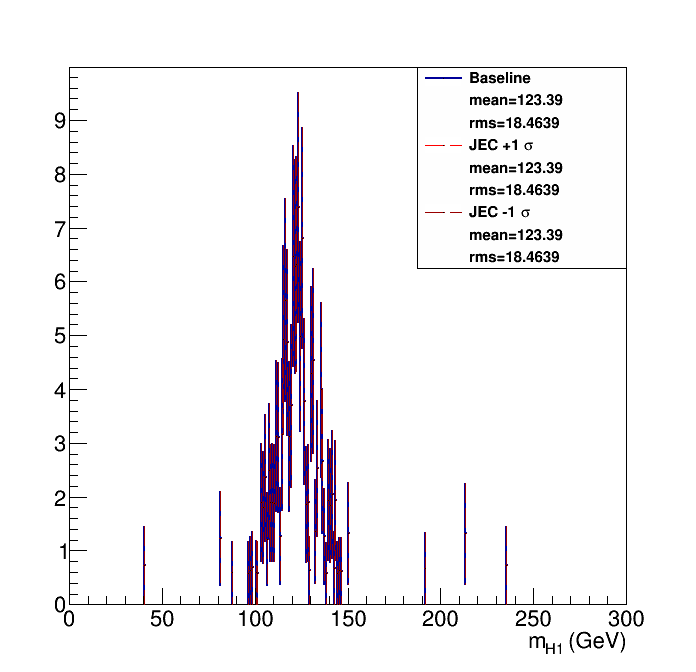
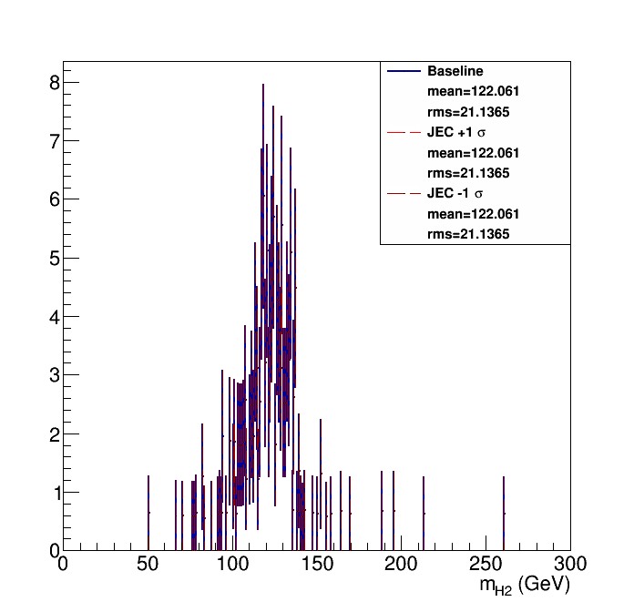
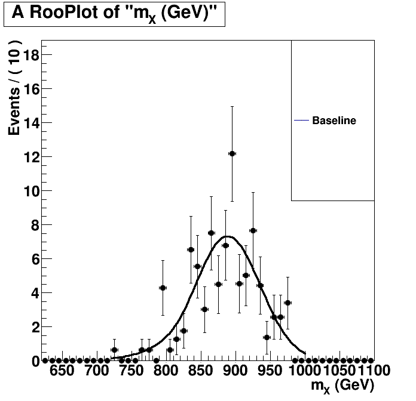
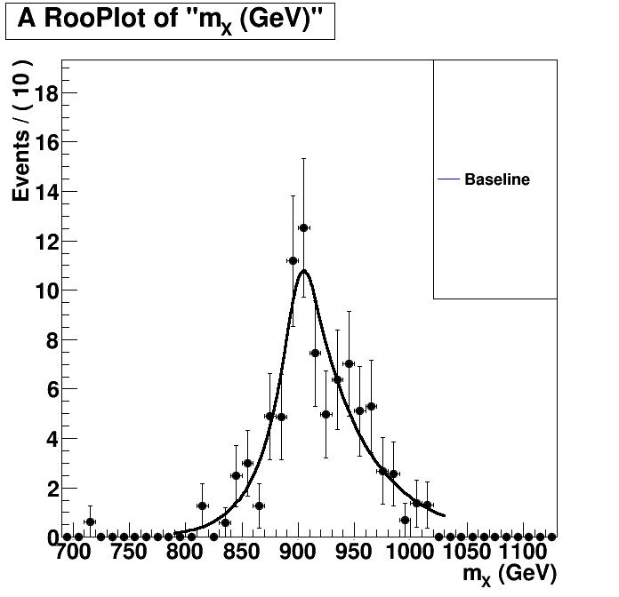

| Higgs 1 mass  | Higgs 2 mass  |
Without Kin-Fit. Fitted to an Exp-Gauss-Exp function.=== Baseline plot === |
With Kin-Fit. Fitted to an Exp-Gauss-Exp function.=== Baseline plot === norm = 971.35 sg_p0 = 905.175 5.822 sg_p1 = 20 11.2567 sg_p2 = 0.419832 0.0970936 sg_p3 = 0.784426 0.17486 btag lnN 1.03891 - |